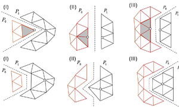
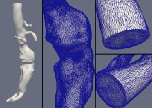
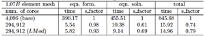

Interfaces | Services | Mesh Geometry | Mesh Curving | Mesh Smoothing | Mesh Swapping | Adaptive Loops | Front Tracking | Dynamic Services | Search and Sort | Visit Plugins | iMeshIO | IPComMan | Mesh Adapt Service | Petascale Meshing | Shape Optimization | AMR Front Tracking | Solution Transfer
Parallel simulations at extreme scale require that the mesh is distributed across a large number of processors with equal work load and minimum inter-part communications. A number of algorithms have been developed to meet these goals and graph/hypergraph-based methods are by far the most powerful ones. However, the global implementation of current approaches can fail on very large core counts and the vertex imbalance is not optimal where individual cores are lightly loaded. Those issues are resolved by combination of global and local partitioning and the iterative improvement algorithms developed in [1, 2]. This combined partition strategy is applied to the simulations at extreme scale with up to O(1010) elements and up to O(300K) cores.
Two partitioning categories are defined based on data provided to graph/hypergraph-based partitioner: global partitioning, which considers both intra-processor and inter-processor graph edges, and local partitioning which considers only intra-processor graph edges. Global partitioning considers the complete set of graph edges and provides a balanced partition with well-controlled inter-part communication. Local partitioning considers only the on-processor (intra-processor) graph edges and nodes, without knowing the existence of graph nodes and edges on other processors. In this case, partitioning is carried out independently on each processor, as a serial process, which can be executed in an embarrassingly parallel fashion on all processors.
At large core counts local partitioning requires much smaller compute time where a global partitioning implementation may fail. However, as local partitioning is repeated, the quality of the partition will decrease due to the compounding of imbalance in each step. Local partitioning is not optimal, but provides good starting partitions that can easily be improved by iterative algorithm [1, 2].
When very large core counts are considered, the problems observed in the partition obtained from the graph/hypergraph-based procedures are limited to a number of heavily loaded parts (based on mesh vertices), referred to as spikes. Thus scalability of the equation solution phase, is limited by these spikes. The diffusive approach, Local Iterative Inter-Part Boundary Modification (LIIPBMod) developed in [1], reduces spikes by migrating selected mesh entities from relatively heavily loaded parts to less loaded neighboring parts. On heavily loaded parts, the mesh vertices on the inter-part boundary are traversed and the ones bounding a small number of elements are identified. Then the elements adjacent selected vertices are migrated to the lightly loaded neighboring part. Figure 1 explains the algorithm using three, 2D examples for clarity. The procedure has been implemented for 3D meshes.
Figure 1: partition before (top) and after (bottom) LIIPBMod
By this local inter-part boundary adjustment, the vertex imbalance is improved while only modestly perturbing the element balance. The procedure is repeated for several iterations to achieve the desired improvement to the vertex balance. In the extreme scale simulations, the global and local partitioning are used in a combined manner. i.e., in the first step, the mesh is balanced globally into an intermediate number of parts, m, and in the second step, each of these m parts split independently to n parts, which gives mxn parts in total. In the final step, the balance of the partition is improved by an iterative mesh entity migration procedure. This combination is much faster and more efficient compared to global partitioning.
An abdominal aorta aneurysm (AAA) model (see Figure 2) is used to study the partition improvement algorithm by using it in conjunction with graph/hypergraph-based procedures, namely ParMETIS PartKWay [3] and Zoltan Parallel HyperGraph partitioner PHG [4].
Figure 2: The geometry and the mesh of an abdominal aorta aneurysm (AAA) model
First consider a 1.07 billion anisotropic, tetrahedral element mesh created by applying mesh adaptation [5] on an AAA model. The global (ParMETIS PartKWay) and local (PHG) partitioning are combined to obtain different partitions with number of parts ranging from 4,096 to 294,912 [2]. The element imbalance is within 6% for all the partitions with up to 294,912 parts. However, the vertex imbalance is getting worse when the mesh is distributed to more and more parts. Each part of a globally balanced (1.025% element imbalance) partition with 4,096 parts splitting to 72 parts gives a partition with 294,912 parts in total. The element imbalance is 5.6%, but the vertex imbalance is 43.7%, which indicates 43.7% more work to do on the part with the highest number of vertices during the equation solution phase of the FEA. The LIIPBMod algorithm reduces the vertex imbalance dramatically to 17% while increasing the element imbalance to 15%. Table 1 presents the time usage of the FEA along with the scaling factors.
Table 1. Strong scaling results of FEA on an AAA model with 1.07B elements up to 294,912 cores on JUGENE with and without LIIPBMod algoithm. LMod denotes LIIPBMod.
It also compares the cases with and without using LIIPBMod algorithm. The equation solution phase is accelerated by 12% (from 10.38 to 9.14 seconds) due to better vertex balance, while the equation formation is slowed down a little from 5.54 to 5.82 seconds. The total time usage of the FEA is reduced from 15.92 to 14.96 seconds and the scaling factor is increased from 0.74 to 0.79. The time spent on the FEA is reduced by 0.96 second per 20 time steps, which means 78.6 cpu hours. In the real application, we usually run thousands of time steps per cardiac cycle, e.g, 5000. By using LIIPBMod algorithm, we save 78.6x5000=393 thousand cpu hours per cardiac cycle in analysis. The time spent on LIIPBMod algorithm is much smaller than the classical graph/hypergraph-based partitioner, which is negligible compared to solver [1]. An 8.56 billion element mesh was also run and yielded similar results.
[1]. M. Zhou, O. Sahni, K.D. Devine, M.S. Shephard, K.E. Jansen, Controlling Unstructured Mesh Partitions for Massively Parallel Simulations, SIAM Scientific Computing, 2010, accepted.
[2]. M. Zhou, O. Sahni, T. Xie, M.S. Shephard, K.E. Jansen, Unstructured Mesh Partition Improvement for Implicit Finite Element at Extreme Scale, Journal of Supercomputing, 2010, under review.
[3]. G. Karypis and V. Kumar, A parallel algorithm for multilevel graph partitioning and sparse matrix ordering, 10th Intl. Parallel Processing Symposium, 314-319, 1996.
[4]. K. Devine and E. Boman and R. Heaphy and B. Hendrickson and C. Vaughan, Zoltan Data Management Services for Parallel Dynamic Applications, Computing in Science and Engineering, 4(2):90-97, 2002.
[5]. O. Sahni and Y. Müller and K.E. Jansen and M.S. Shephard and C.A. Taylor, Efficient Anisotropic Adaptive Discretization of the Cardiovascular System, Comp. Meth. Appl. Mech. Engng. 195: 5634-5655, 2006.